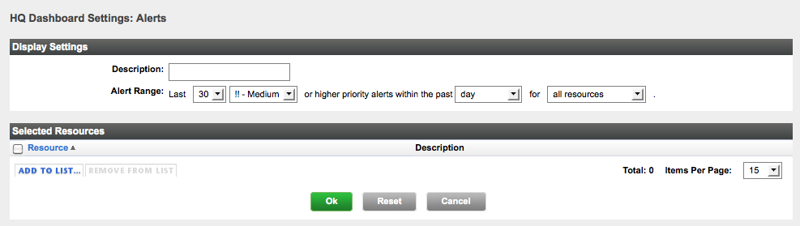
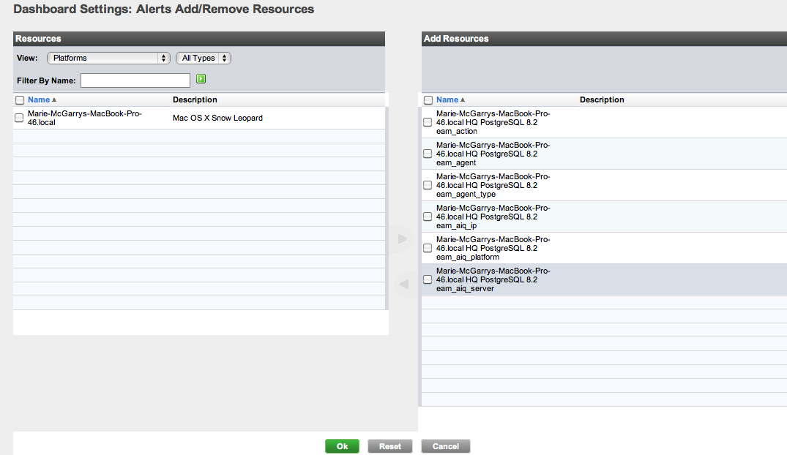

vFabric Hyperic 4.6.6 : ui-Dashboard.Alerts
This page last changed on Jan 04, 2012 by mmcgarry.
Topics marked with * relate to features available only in vFabric Hyperic.
About the Recent Alerts Portlet
The Recent Alerts portlet presents a list of recently fired alerts. The following information is shown for each alert:
- Date/Time - When the alert fired. Click to view the Alert Detail page.
- Alert Name - Name of the alert definition.
- Resource Name - The resource where the alert fired.
- Fixed - Whether the alert has been marked "fixed".
- Ack - whether the alert has been acknowledged.

Configure the Recent Alerts Portlet
- Click the gear icon in the upper right corner of the Recent Alerts portlet.
- The HQ Dashboard Settings: Recent Alerts page appears.
 - In the Display Settings section:
- Description — (optional) Enter a description, if desired. The description will appear at the top of the portlet.
- Alert Range — Select:
- Maximum length of the alert list: 4, 10, 20 or 30.
- The minimum priority of the alerts to include.
- Timeframe of interest; choices range from 30 minutes to a month.
- Resources of interest:
- all resources - With this this setting, alerts (that meet the priority and timeframe criteria) on any resource can appear in the list.
- selected resources - With this this setting, the alert list contains only resources listed in the Selected Resources section that meet the priority and timeframe criteria.
- If desired, define a set of resources of interest in the Selected Resources section.

The content of the portlet will be limited to alerts that fired on resources in the Selected Resources only when the "all resources/selected resources" switch is set to "selected resources". The contents of the Selected Resources section is ignored when the "all resources/selected resources" switch is set to "selected resources". - If the the Selected Resources section contains resources not of interest, check the box next to them and click Remove from List.
- If you wish to add resources to Selected Resources click Add to List.
- The Dashboard Settings: Alerts Add/Remove Resources page appears.
 - In the Resources column:
- Use the View filters to filter by inventory type, resource type, or both, as desired.
- Enter a substring in the Filter by Name field to filter by resource name, as desired.
- In the list of resources, checkmark desired resources, and click the right arrow between the columns to include them in the portlet.
- If the Add Resources column a contains resources that are not of interest, checkmark those resources and click the left arrow between the columns.
- Click OK.
{kind=link}
{kind=link}
{kind=link}
{kind=link}